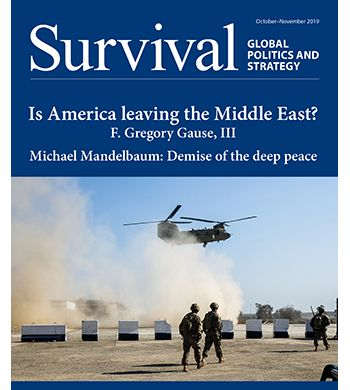

收录于合集

简 介
** 【作者】** 斯蒂芬·沃尔特（Stephen M. Walt）是哈佛大学肯尼迪政府学院贝尔福科学与国际事务中心教授。他在斯坦福大学获得国际关系学士学位，在加州大学伯克利分校获得政治学硕士和博士学位，并曾在普林斯顿大学和芝加哥大学任教。他的著作有《联盟的起源》《革命与战争》《驯服美国实力》等。
** **【 编译 】****金 琳
** **【 校对 】****杨艺华
** **【 审核 】****李 源
** 【来源】** Stephen M. Walt (1997) Why alliances endure or collapse, Survival:Global Politics and Strategy, 39:1, 156-179
** 【期刊】** Survival: Global Politics and Strategy是国际战略研究所（IISS）的双月刊。国际战略研究所致力于促进加强对话，促进全球安全，以及帮助世界各国政府、企业、媒体和专家制定相关的战略议程。

联盟为何得以存续或走向瓦解？
Why Alliances Endure or Collapse？
Stephen M. Walt ****
内容提要
冷战期间，由于来自苏联明显的威胁和全球均势相对稳定，主要的联盟大概保持了40多年的稳定。冷战的结束使这些联盟（最明显的是北约）形成的动因消失了，这引发了人们对联盟未来前景的激烈争论。作者认为，争论的大部分内容并不是来自于对联盟动态的复杂的理论理解。这主要是因为来自政策世界的参与者通常不熟悉关于联盟的理论研究，也是因为最近的理论文献往往忽略关于联盟瓦解或持久存在的原因的研究。因此，为了缩小理论差距，作者探讨两个密切相关的问题：
首先，联盟为什么会解体？是什么力量或事件导致各国放弃国家间的安全联系？
其次，联盟为什么会持久存在？尤其是为什么在形成联盟的动因消失之后，联盟仍然存在？
为了解决这两个问题，作者从“理性”和“非理性”两方面进行了探讨。联盟解体可能是因为它不再符合一个或多个成员的利益，这时的联盟解体是一种“理性”的决定。但是，即使有充足的理由证明联盟本应继续存在，联盟也可能会因为本质上“非理性”的原因而解体，包括国内政治、个人愤怒、误解等。同样的原因也适用于解释联盟为何持久存在。尽管外部环境发生了巨大的变化，联盟仍可能继续存在，因为其成员在联盟内的境况仍好于在联盟外。另一方面，由于国内政治、误解或简单的人为错误，即使联盟已经成为某种负担，它也可能保留下来。因为政治生活通常同时包含“理性”和“非理性”的因素，所以作者在文中考虑了这两种解释。
文章导读
什么是联盟？
作者将联盟界定为两个或多个主权国家之间安全合作的正式或非正式关系。 ****虽然不同联盟所体现的具体安排差别很大，但联盟的基本特征都是在特定的情况下对某些外部行动者做出相互军事支持的承诺。作者强调同时考虑正式和非正式的联盟是有意义的，因为即使没有正式条约，各国也可以相互提供支持，并且正式协议通常对实际承诺的程度影响不大。
大多数联盟的主要目的是结合成员国的实力，以增进各自的利益。然而，联盟之间也有很多不同：
1、合作的形式和承诺的性质差别很大；
2、联盟的制度化程度不同；
3、联盟的作用不同；
另外，联盟与其他形式的安全合作在许多重要方面有所不同。联盟不是集体安全协议。 集体安全安排是一个包容性的制度 ：它要求成员国反对任何侵略行为，即使是成员国的侵略行为。相反， 联盟是排他性的机构 ：要求盟友之间相互支持以反对联盟以外的国家。
**联盟为什么会走向瓦解
**
在本章作者强调了联盟瓦解的几个原因。首先，最重要的原因是作为联盟形成动因的威胁（国）的身份或性质发生了变化。如果威胁减弱，或者被更大的威胁所取代，那么为了对抗最初的威胁而形成的联盟可能会发生变化。其次，如果成员国获得了其他保护自己的手段，或者成员国开始质疑伙伴履行义务的能力或意愿，联盟也将趋于瓦解。第三，当各国因国内政治动荡而重新定义自己的利益，联盟或许也会趋于瓦解。第四，当成员国意识形态原则不相容，且外部威胁程度小到无法消除这些分歧时，那么现有的联盟很可能会受损。
在多极化的世界里，联盟往往不那么强大，因为随着大国数量的增加，它们将拥有更多的选择，而且当体系中大国数量增多时，实力分配的变化将更加频繁。对每个国家来说，要确定谁是最大的威胁也将更加困难，而国际联盟很可能更加灵活多变。
一、 对威胁认知的改变 ****
联盟通常被认为是对外部威胁的回应。威胁水平取决于综合实力、地缘毗邻性、进攻实力和侵略意图。在同等条件下，任何因素的增加都会提高一个国家对其他国家的威胁水平。一旦成员国面临的威胁水平发生重大变化，联盟就会解体。有很多原因会导致转变的产生。最明显的原因是 均势的变化 。如果构成最初威胁的国家实力减弱，成员国将不再需要外部支持，现有的联盟可能会解体。同样，如果联盟中的一个成员变得强大，联盟也有可能瓦解，这既是因为崛起的国家不再需要联盟的支持，也是因为其他成员将崛起国视为对其安全的威胁。
其次是 侵略意图的变化 。如果成员国改变了对其他国家意图的认知，包括其对手与盟友，联盟就有可能会解体。具体来说，如果成员国确信他们的对手不像他们曾经担心的那样好战，或者盟友变得越来越好斗，那么联盟本身就不太可能持久。无论在何种情况下，随着主要威胁的规模或身份发生变化，联盟关系会相应发生变化。
最后是 手段的变化 。即使最初的威胁仍旧存在，如果联盟成员有维护自身利益的其他手段，联盟也可能会瓦解。
二、 信誉下降 ****
由于结盟主要是为了增强成员国的安全，任何怀疑成员国是否有能力实现这一目标的事情都会促使成员国重新评估他们的立场。即使威胁程度没有改变，如果成员国质疑现有的安排是否能够保证其安全时，联盟也会变得很脆弱。
对现有联盟产生怀疑源于两个方面：首先，成员国可能会认为联盟缺乏威慑或击败对手的物质实力。那么，与敌人结盟或采取中立立场可能更安全。其次，当成员国开始质疑伙伴国是否真正致力于提供支持时，联盟可能会解体。这里更强调意愿而不是能力，尤其是当联盟不再符合每个成员国的利益、地理位置不同以及成员国之间存在巨大的权力不对称。
三、 国内政治的影响 ****
1、 人口和社会发展趋势 ****
如果现有的联盟在某种程度上是建立在两个社会的跨国联系的基础上，例如共同的种族、文化背景、历史经验等，那么任何一个社会内部组成的变化都会削弱联盟的力量。
2、 国内竞争 ****
如果成员国国内精英决定通过攻击联盟来改善内部地位，那么联盟可能会受到威胁。如果联盟更偏向某些成员 (从而使其显得不公平)，或者联盟的条款涉及被视为对国家主权的侮辱的措施，则更有可能出现这一问题。在这种情况下，中止联盟可能会带来超过任何战略成本的国内政治利益。
3、 政权更迭 ****
国家利益并非一成不变，社会中的不同群体对利益的定义也不相同。如果领导层组成发生改变，那么国家利益可能会重新排列。领导层组成变化相对较小时（例如，一组领导人通过合法选举被替换），这种影响将是最小的；但当领导层由于政权的基本性质发生变化而改变时，这种影响将会增加。新领导人可能更喜欢与前任截然不同的政策，而且他们可能觉得没有义务履行之前的承诺。
4、 意识形态分歧 ****
这一点将联盟解体归咎于信奉不同意识形态的国家间会不可避免地产生分歧。尽管严重的外部威胁可以暂时克服意识形态上的反感（例如，二战期间），但一旦威胁消失，价值观和目标上的分歧很快就会把盟国拆散。另外，某些意识形态倾向于在持有类似信仰的国家之间引发冲突。原因很简单：当每个政权的合法性都是建立在意识形态的基础上时，意识形态要求服从单一的中央权威，因此他们将不可避免地为谁应该占据主导地位而争吵。
** ****** 为什么联盟会得以存续
在本章，作者解释了为何在联盟产生的条件发生重大变化后联盟仍旧存在的原因。作者主要强调了以下几方面的原因：联盟内部存在巨大的权力不对称；成员国拥有相似的政治价值观；联盟内部高度制度化；而当成员国之间具有强烈的共同认同感时，联盟将尤其持久，但这种转变极其罕见。
一、霸权领导 ****
强大的联盟领导国行使霸权有助于使维持联盟长久存在。联盟领导国可以通过承担大部分的成本、提供物质上的诱惑使联盟更具吸引力，或通过威胁惩罚不遵守承诺的行为来阻止联盟解体。联盟内部团结取决于两个明显的先决条件：首先，联盟领导人必须坚定地维护成员国间关系，并愿意付出必要的努力，防止其盟友误入歧途。其次，联盟领导人必须比其潜在的不忠盟友强大得多，以便能够承担强制的额外成本。
二、信誉维持 ****
如果联盟已成为信誉或决心的象征，那么联盟更有可能继续存在。如果联盟成员开始质疑其合作伙伴的可靠性，则联盟更有可能解体。为了防止这种情况发生，一个拥有众多盟友的国家可能不愿放弃其中任何一个盟友，以防这一行动被其对手（或其他盟友）解读为联盟变得脆弱。因此，即使一个特定的联盟没有什么内在价值，其成员也可能保留它，以避免干扰他们认为更重要的其他承诺。
三、国内政治和精英操纵 ****
联盟的存在也可能是因为一个或多个国家的利益集团需要联盟来支持他们的个人利益，尽管联盟可能不符合他们所在的较大社会的利益。例如，联盟的建立和维持可能是由于与外国势力有强大联系的少数民族集团的压力，或者是由于精英集团在联盟内拥有巨大经济利益。
四、制度化 ****
联盟内部制度化程度越高，联盟越有可能在面临外部威胁的巨大变化时存在下去。 “制度化”指的是负责执行特定的联盟内部任务(如军事规划、武器采购和危机管理)的正式组织的存在，以及制定正式或非正式规则以管理联盟成员如何达成集体决策。然而，制度化程度的提高是有代价的。高水平的制度化可能不会带来更高的效率，特别是当复杂的决策过程促进僵局或不作为时。此外，精心设计的制度结构可能会掩盖联盟的基础受到侵蚀的程度。
五、意识形态团结、认同和 “安全共同体” ****
当两个独立国家分享共同的政治价值观念和目标并且继续把自己视为独立的政治实体时，意识形态团结（ ideological solidarity）就存在了。在其他条件相同的情况下，国家通常更愿意与政治观点类似的政府结盟，这有助于彼此可以相互扶持。意识形态的团结可以减少联盟内部的冲突，对类似的基本目标的承诺可以帮助联盟在原有的基础消失很久之后维持下去。
同样，由于联盟成员将自己视为一个更大的政治共同体的组成部分，联盟也会持续下去。当一个联盟反映或创造了一种共同的认同感时，个人的“国家利益”的概念就不那么适用了。精英和（或）公众将本社会视为一个更大的政治团体中不可分割的一部分后，成员们会发现很难想象自己是独立的。即使外部环境发生巨大变化，他们也会认为自己的利益是相同的。这种可能性类似于卡尔·多伊奇(Karl Deutsch)提出的“多元安全共同体”（pluralistic security community）概念，即一群正式主权国家享有一种“共同体感”，“足以在很长一段时间内确保……在不诉诸武力的情况下解决社会问题”。
** ** 结 论****
在这一部分，作者利用上述联盟持久或瓦解的原因分析了苏联解体后以美国为主导的一系列联盟存续面临的条件。从 积极的方面 看，对美国而言，冷战联盟网络既是快速变革时代的稳定力量，也是塑造冷战后秩序的有用机制。北约为欧洲进行新的安全协定谈判提供了一个平台，并让美国继续维持在欧洲大陆的影响力，从而抑制了欧洲安全政策的“再国有化（renationalisation）”。共有的政治价值观也加强了北约的力量，高度制度化的特点使其更容易解决冲突，并有助于成员国适应新的地缘政治条件。而在亚洲形成的多个双边联盟，既阻碍了地区竞争，也对日益崛起、日益自信的中国形成了对冲。因此，在苏联解体后，美国及其盟友有充足的理由维持联盟。由于美国在联盟中发挥的重要作用，未来联盟的发展将主要取决于美国外交政策的走向。如上所述，当一个强大的国家愿意并且有能力支付与领导能力相关的成本时，联盟更有可能持续下去。苏联解体后，由于美国处于压倒性的强势地位以及惯性作用，并没有导致美国立即紧缩开支，因此也没有导致现有联盟的迅速瓦解。
从消极的方面看 ，由于重大威胁的消失，联盟缺乏作出承诺的坚实基础。冷战时期，联盟内部的冲突最终服从于威慑苏联的目标。但随着苏联解体，将联盟内部争端限制在一定范围内的理由也越来越少。因此，管理联盟可能会更加困难，需要更加灵活的外交手段。另外，如果美国为了让盟友满意而付出太多，国内可能会产生反对的声音。但如果美国试图利用自己的霸权地位强加本国偏好，或获得单边优势（从而满足其国内选民），将不可避免地激起盟国的反对。另外，高昂的军费开支以及美国关注点由欧洲转向亚洲等结构性趋势也使联盟进一步恶化。
为了将未来的分歧限制在一定范围内以防止联盟重新回到激烈的安全竞争中，作者提出了一些建议。第一，降低预期。主要目标应该是保持美国在欧洲和亚洲的存在，并在美国及其主要盟友之间保持强有力的磋商机制。美国及其主要盟友必须学会以更少的一致性和更大的灵活性行动，而不是在每一个问题上都寻求统一战线。第二，尽管取消北约向东扩张的决定可能为时已晚，但应尽可能拖延执行这项决定。第三，要维持目前的一系列大国联盟，美国需要重新作出努力，派遣那些将联盟承诺视为维持和平的宝贵的政策的人去说服公众。
_ ** _ ** _ ** _ 本文由国政学人独家编译推荐**__
扫下方二维码查看往期精彩
【新刊速递】第01期 | Review of International Studies Vol.45, No.4, 2019

▲分类导览 1
▼分类导览2